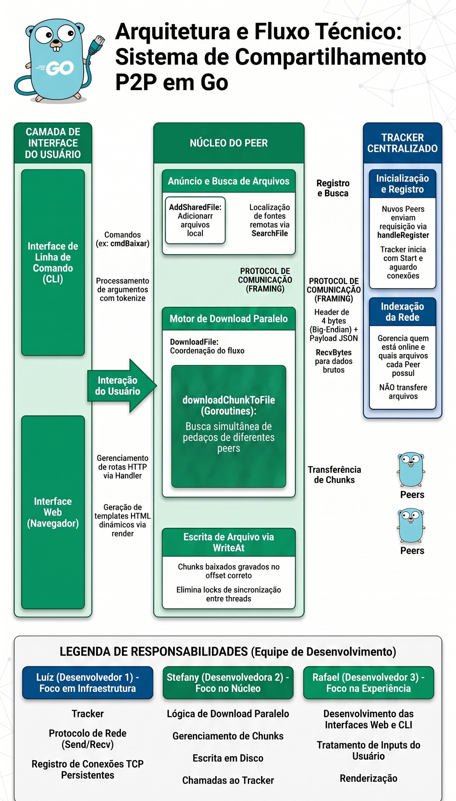

Este projeto consiste em um sistema de compartilhamento de arquivos ponto-a-ponto (P2P) com um rastreador (tracker) centralizado. Desenvolvido inteiramente na linguagem Go, o sistema permite que múltiplos "peers" se conectem para compartilhar, buscar e baixar arquivos entre si. Além da transferência de arquivos, o projeto suporta a troca de mensagens de chat em tempo real e oferece duas formas de interação: uma interface de linha de comando (CLI) e uma interface web acessível via navegador.
A escolha da linguagem Go é fundamental para este projeto devido ao seu modelo nativo e eficiente de concorrência, que é explorado em funcionalidades críticas:
pool de goroutines para baixar diferentes "chunks" (pedaços) de um arquivo de múltiplos peers simultaneamente.
Isso permite que a largura de banda seja otimizada ao solicitar partes distintas do arquivo para diferentes fontes ao mesmo tempo.
WriteAt, cada goroutine escreve seu pedaço diretamente na posição correta do arquivo de destino.
Como os intervalos de bytes não se sobrepõem, o projeto consegue paralelismo real na escrita sem a necessidade de travas (locks) complexas.
O código está organizado em diretórios modulares, cada um com uma responsabilidade específica:
cmd/: Contém os pontos de entrada (arquivos main.go) para iniciar o Tracker e o Peer.peer/: Implementa toda a lógica de cliente e servidor do peer, incluindo o gerenciamento de arquivos compartilhados e o motor de download paralelo.tracker/: Contém a lógica do servidor central que mantém o índice de quais peers estão online e quais arquivos cada um possui.protocol/: Define o protocolo de comunicação baseado em JSON e o sistema de enquadramento (framing) para envio de dados binários (chunks).web/: Implementa a interface gráfica simplificada utilizando o servidor HTTP nativo do Go.Abaixo estão as funções essenciais que movem o sistema:
DownloadFile() (Peer): Orquestra o download paralelo, dividindo o arquivo em pedaços e distribuindo a tarefa entre os workers disponíveis.serverLoop() (Peer): Loop infinito que aceita novas conexões de outros peers e dispara uma goroutine (handlePeerRequest) para cada uma.Start() (Tracker): Inicia o servidor central e aguarda conexões persistentes dos peers para registro de arquivos.AddSharedFile() (Peer): Lê os metadados de um arquivo local e o anuncia para o Tracker, tornando-o disponível para a rede.SearchFile() (Peer): Consulta o Tracker para obter uma lista de quais peers possuem um determinado arquivo.O desenvolvimento do projeto foi estruturado de forma modular, permitindo que cada integrante focasse em uma camada específica da arquitetura P2P:
protocol, estabelecendo o sistema de framing (cabeçalhos de 4 bytes) para o envio seguro de mensagens JSON e dados binários. Também implementou o Tracker, garantindo que o servidor central conseguisse gerenciar conexões persistentes e indexar arquivos de múltiplos peers simultaneamente.
peer, utilizando goroutines e o controle de workers. Também foi responsável pela confiabilidade, aplicando Mutexes para proteção de dados e a função WriteAt para escritas simultâneas em disco sem conflitos.
html/template) para permitir a busca e download de arquivos via navegador. Além disso, implementou a CLI (Interface de Linha de Comando), criando o sistema de tokenização de comandos e a integração das funcionalidades de chat e busca para o usuário final.
A comunicação e organização ocorreu por grupo de trabalho no WhatsApp e reuniões curtas no Discord para alinhamento e gravação do conteúdo final

Legenda: Luíz (Infra/Protocolo), Stefany (Núcleo/Paralelismo) e Rafael (Interfaces).